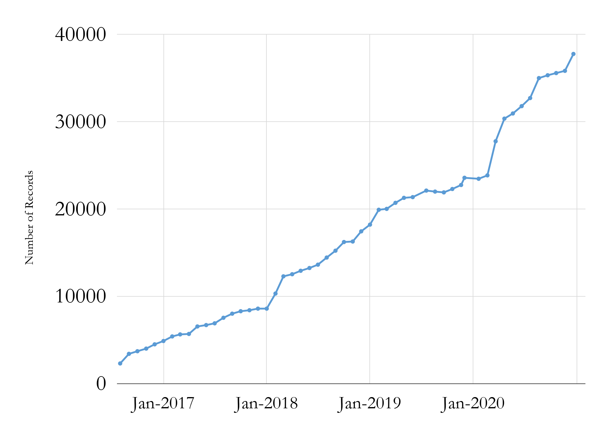

By Joshua Sadvari and Daniel Dotson This interview is part of our Data Provider Series, which highlights local governments and institutions that offer open GIS data. In each interview, providers tell us about their missions and data resources. We hope this will be a great way for readers to learn more about local GIS developments and new initiatives.
Name: Aaron Schill Title: Director of Data & Mapping Division/Department: Data & Mapping, Mid-Ohio Regional Planning Commission (MORPC) Website: www.morpc.org/data
1) Can you describe MORPC's mission and talk a little bit
4 min read
Big Ten Academic Alliance Geospatial Data Project
Project Update: December 2020
Table of Contents
Project Highlight for December
Two New Working Groups:
Education Outreach (phase 2) _ and _ Diverse Collections
_Our project has entered an exciting new phase in which we are increasing our efforts towards directly facilitating teaching\, learning\, and our service to the academic community. This is evident in our two newest Working Groups (WG). _
The _ _Education Outreach WG\, which published _ six tutorials _ in the Fall of 2020\, has regrouped for a phase 2. The WG plans to identify educational disciplines to be targeted for outreach (ex. public health\, urban planning\, environmental studies\, etc.)\, and follow up by identifying resources in the geoportal that could be useful to the selected disciplines.
The _ _Diverse Collections WG _ will kickoff in January and will be defining and assessing diversity across the geoportal collection. They will then identify thematic datasets and create collections of resources that could be useful in research and teaching on social\, racial\, economic\, and environmental justice topics_
Statistics: Item Records

Total Item Records
37\,744
December 2020 actions
New records: 1959
Retired records: 20
Statistics: Geoportal & Blog Users
Geoportal & Project Site* users for the months of December (2016-2020)
*Blog\, Help\, Tutorials\, Conference info
Statistics: Top Pages
Top Geoportal Items
Top Downloaded Items
Top blog post
Wisconsin Historic Aerial Imagery Finder (Aerial Photos 1937-41) (226)
We plan to put GEOMG\, our custom metadata editor\, into production mode. This will entail hosting it on a paid platform and integrating it with the Geoportal
Two BTAA Task Force members are serving on the GeoBlacklight Metadata Schema Workgroup\, which plans to release a new version of the schema in January. This will be followed by a Winter Code Sprint to incorporate the new schema into the GeoBlacklight code base.
The Communications Committee is gathering keywords for a Google Ads campaign to be run in spring 2021. We will be looking to see if this experiment brings additional users to the Geoportal.
Check out the latest blog post about the BTAA Geoportal on Spatial Reserves - A Guide to Public Domain Spatial Data. The Spatial Reserves blog is maintained by Joseph Kerski & Jill Clark and contains a wealth of information about open geospatial data and issues around access. Mr. Kerski was an invited speaker at our recent BTAA GIS Conference.
By Jae Sung Kim This interview is part of our Data Provider Series, which highlights local governments and institutions that offer open GIS data. In each interview, providers tell us about their missions and data resources. We hope this will be a great way for readers to learn more about local GIS developments and new initiatives.
Name: Maurie Kelly Title: Director Division/Department: Pennsylvania Spatial Data Access (PASDA) Website: www.pasda.psu.edu
####
About Pennsylvania Spatial Data Access (PASDA) Using PASDA, users can easily find geospatial data with various functions including preview and download. Maurie Kelly noted that:
Featured Item: Wisconsin Statewide Tax Parcels 2014-2020 Wisconsin Act 20, the biennial state budget for 2013-2015, created statutory directives for state and local governments to coordinate on the development of a statewide digital parcel map. The Statewide Parcel Map Initiative is an effort to create a digital parcel map for Wisconsin by aggregating local parcel datasets utilizing geographic information systems (GIS). The Parcel Initiative is a multi-faceted, multi-year collaborative effort of the Department of Administration, State Cartographer's Office, and local governments. The predecessor to the Statewide Parcel Initiative was the LinkWISCONSIN Address Point and Parcel Mapping
Featured Item: Johns Hopkins University Covid-19 Dashboard Early on in the worldwide outbreak of COVID-19, Johns Hopkins University took the lead in creating a portal of frequently updated data feeds. It pulls together up to 600 datasets including medical cases, hospitalizations, deaths, recoveries, stay at home orders, essential vs. nonessential business designations, and travel and quarantine orders. This Dashboard is one of the most commonly cited public sources of aggregated Covid-19 data, as it delivers public health statistics using easy-to-understand maps and charts. Users do not need to load the GIS data in
4 min read
Big Ten Academic Alliance Geospatial Data Project
Project Update: November 2020
Table of Contents
Project Highlight for November
BTAA GIS Conference
We held the first _ BTAA GIS Conference _ on November 13\, 2020. This virtual conference was co-sponsored by Purdue University\, which provided the hosting and technical support.
The conference featured presentations\, social hours\, career networking\, a map contest\, a geo-trivia night\, and an Open Humanitarian Mapathon. We also highlighted GIS educational programs across the BTAA. Over 400 people from 10 countries registered for the conference. Each of the presentation sessions had approximately 50-100 attendees\, while the late afternoon social hours featured about 15-20 participants.
The idea for the conference was developed by _ _Nicole Kong _ (Purdue University)\, who also served as the chair. This event gave our project a great deal of visibility. One of the invited speakers\, Joseph Kerski\, followed up the conference by writing _ a post about the BTAA Geoportal on his blog.
We plan to put GEOMG\, our custom metadata editor\, into production mode. This will entail hosting it on a paid platform and integrating it with the Geoportal
Two BTAA Task Force members are serving on the GeoBlacklight Metadata Schema Workgroup\, which plans to release a new version of the schema in December. This will be followed by a Winter Code Sprint to incorporate the new schema into the GeoBlacklight code base.
The Interface Committee will collate and assess the results of the user tests and make recommendations for design improvements.
Registration now is open for Big Ten Academic Alliance (BTAA) GIS Conference! Date: November 13, 2020 Location: Virtual (Zoom)
####
This is a one-day conference that brings geographic information users across disciplines from different Big Ten institutions.
* It will be entirely online.
* Registration is free and open to all.
* We recommend to use your school or work email for registration if possible.
* The Map Gallery is still open for submission until October 31st! Please submit your map proposal here.
By Melinda Kernik and Laura McElfresh This interview is part of our Data Provider Series, which highlights local governments and institutions that offer open GIS data. In each interview, providers tell us about their missions and data resources. We hope this will be a great way for readers to learn more about local GIS developments and new initiatives.
Name: Zeb Thomas Title: GIS Data Systems Coordinator Division/Department: MNIT Services Partnering with the MN Department of Natural Resources Website: https://www.dnr.state.mn.us/
####
1. What is the mission of your agency? The DNR has three primary missions: 1) to
Geospatial Data Project - Tutorials This month, the BTAA Geospatial Data Project is unveiling a series of tutorials to showcase the practicality of the BTAA Geoportal for teaching and learning about maps, geospatial data, and GIS techniques. These tutorials cover a wide range of activities designed to meet the needs of instructors and students in different fields and levels of competency in data retrieval, use, and analysis. The inaugural collection contains the following six tutorials as slides that can be incorporated into in-person, hybrid, or fully online instructional contexts:
####
Find a Map Image for Simple Use
Find a Map Image for Simple Use, by Danny Dotson at Ohio State University, is designed to help students locate a map for a given topic and use it in a document. This tutorial reviews the steps required to locate a relevant map, using the BTAA Geoportal, how to download or copy the scanned map, how to insert the map into a given document, and provides an overview of basic fair use and copyright implications for using these maps.
####
Types of Geospatial Information
Types of Geospatial Information, by Nicole Kong at Purdue University, introduces students to the most commonly used types of data in GIS. Using a range of visual and diagrammatic examples, it reviews the different data models that GIS professionals typically use to collect and share information, and which are discoverable through geodata portals.
####
Finding Geospatial Data
Finding Geospatial Data, by Joshua Sadvari at Ohio State University, is intended to help geoportal users frame a search strategy and perform a search for geospatial data. The tutorial is divided into two activities designed to teach students how to access relevant geospatial data using the BTAA Geoportal based on their research or assignment objectives.
####
Evaluating Geospatial Information
Evaluating Geospatial Information, by Ryan Mattke at the University of Minnesota, is designed to help students evaluate geospatial data on the BTAA Geoportal for research and coursework. This tutorial reviews how to determine if metadata exist for a resource, how to review this metadata to understand the data’s authority, quality, and relevance, and where to find citation information for resources found with the geoportal.
####
Using GIS Web Services
Using GIS Web Services, by Jay Bowen at the University of Iowa, is meant to give GIS users a basic understanding of GIS web services, how to find them using the BTAA Geoportal, and how to use them in QGIS, ArcGIS Desktop, ArcGIS Online, and ArcGIS Pro. The tutorial also contains a link to a walkthrough demonstrating how to use GIS web services to create an interactive web map with Leaflet.
####
Linking Tabular Data to Geospatial Data
Linking Tabular Data to Geospatial Data, by Wenjie Wang at the University of Illinois at Urbana-Champaign, provides step-by-step instructions for downloading and visualizing spreadsheet data in ArcGIS Online by linking tabular data to geospatial data with a key index variable. More specifically, the tutorial gives an overview of how to locate and download a Wisconsin county boundaries shapefile and a data table of population for each county from the US Census Bureau. The tutorial then explains how to prepare the data, add these files to ArcGIS Online, and join the Census data to the county shapefile using the matching county names column in both files. Finally, the tutorial introduces how to symbolize the joined data using county population. We hope that these tutorials will help instructors plan labs and lectures and encourage instructors to incorporate these slides into their course content. We also encourage students and geoportal users to peruse this content for a better understanding of how to use the data in the BTAA Geoportal for assignments, projects, research, and GIS activities. If you are interested in taking a look, these tutorials can be found here.This was originally posted on blogger here.